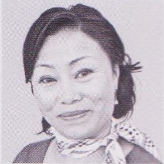
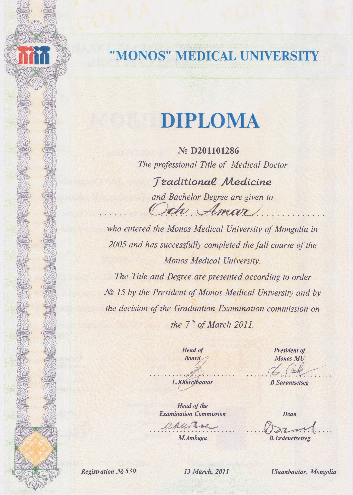
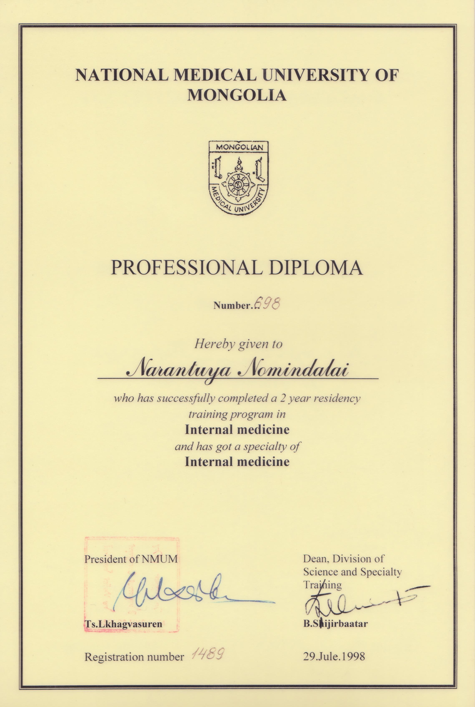
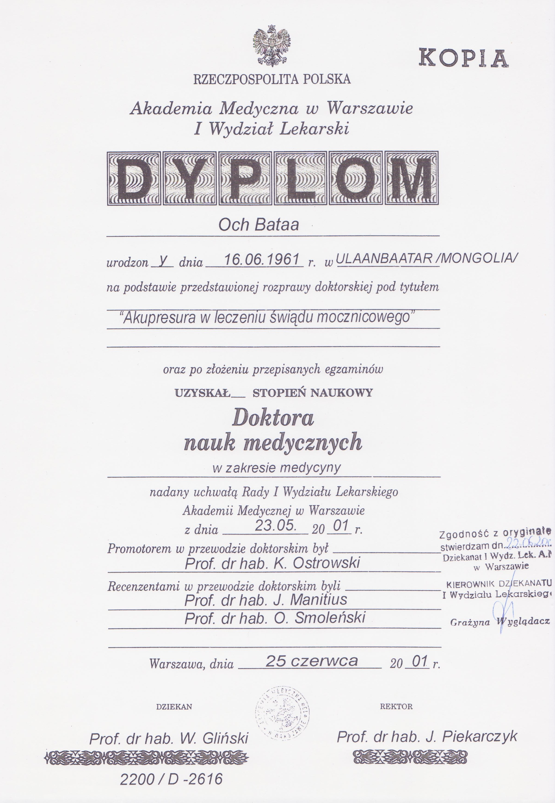

Poznaj nasz zespół
Dr n.med. Ocz Batyn
- Urodził się w Mongolii. W 1985 r. ukończył Akademię Medyczną – I Wojskowy Wydział Lekarski. Pracował jako lekarz wojskowy w Centralnym Szpitalu Wojskowym w Ułan Bator jako neurolog i internista
- W latach 1986-89 zrobił specjalizację interny i neurologii w Akademii Medycznej Ułan Bator. Następnie ukończył międzynarodowy kurs akupunktury i moksoterapii (1989-91)
- W 1991 roku osiedlił się w Polsce, gdzie nostryfikował dyplom z Akademii Medycznej Ułan Bator. Przez następne 6 lat robił staż i pracował. Napisał i obronił pracę doktorską w Akademii Medycznej w Warszawie, I Wydział Lekarski, Katedra Nefrologii, Klinika chorób wewnętrznych i nefrologii, kierunek – nefrologia i akupresura. Tytuł pracy: Akupresura w leczeniu świądu mocznicowego; praca napisana pod kierunkiem prof. Dr. Hab. Kazimierza Ostrowskiego
- Współpracował z Polskim Towarzystwem Akupunktury, ukończył również specjalistyczne teoretyczne i praktyczne szkolenie w dziedzinie leczenia pod kierunkiem prof. Dr nauk medycznych Zbigniewa Garnuszewskiego

Lek. Med. Narantuya Nomindalai
- Urodziła się w Mongolii, ukończyła studia magisterskie, medyczne w 1989 w Akademii Medycznej w Ułan Bator. Pracowała naukowo w Państwowym Instytucie Medycyny Tradycyjnej na kierunku Kardiologia i Choroby Wewnętrzne
- Od 1991 roku pracuje w Polsce (po nostryfikacji dyplomu), prowadzi prywatną praktykę lekarską wraz z mężem dr Oczem Batynem
- 2004-2006 doktorantka w Katedrze i Klinice Gastroenterologii i Chorób Przemiany Materii I Wydziału Lekarskiego Warszawskiego Uniwersytetu Medycznego funkcjonującej w Centralnym Szpitalu Klinicznym przy ul. Banacha
- Narantiya Nomindalai i Ocz Batyn są członkami Okręgowej Warszawskiej Izby Lekarskiej od 15 lat. Posiadają prawo wykonywania zawodu lekarza. Gabinet Pomocy Zdrowotnej jest gabinetem lekarskim w rozumieniu polskiego ustawodawstwa dot. Świadczenia usług medycznych. Gabinet ma podpisaną umowę z Narodowym Funduszem Zdrowia
- Jest mamą trójki wspaniałych dzieci, dwóch dorosłych synów i ośmioletniej dziewczynki. Jest również babcią dwójki wnucząt
Oboje uzyskali w Mongolii tytuł profesora honorowego w swojej specjalizacji medycyny tradycyjnej w 2004 roku. Jest to tytuł honorowy nadawany przez Akademię Medyczną w Ułan Bator za szczególne zasługi. Od ponad 10 lat prowadzą konsultacje eksperckie dla różnych portali internetowych oraz dla pisma ogólnopolskiego „Zwierciadło”, gdzie zamieszczonych zostało już razem ponad 120 artykułów, publicystycznych i naukowych.


